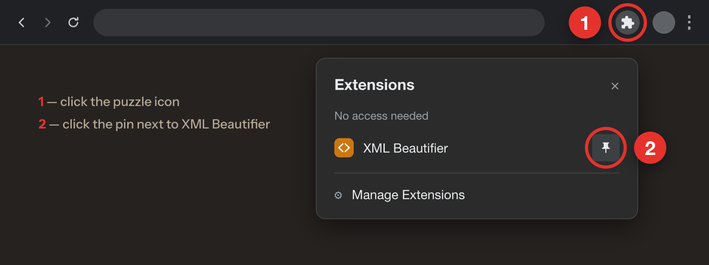
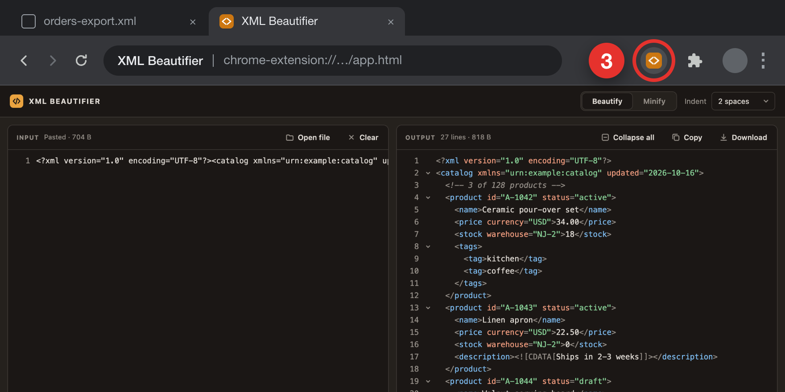
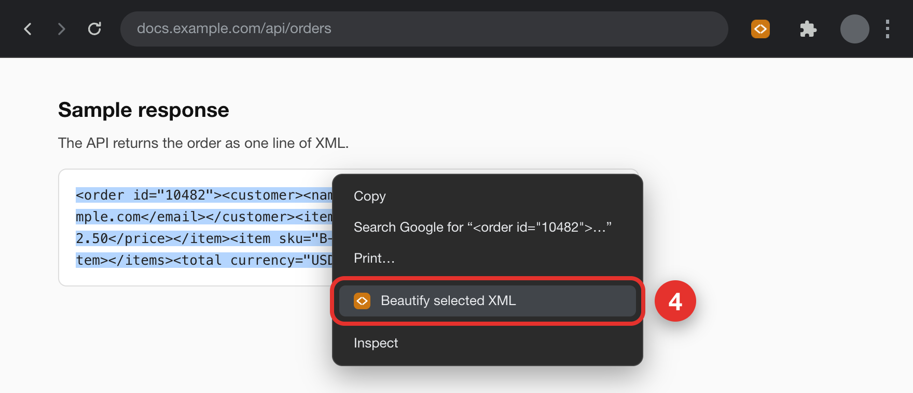

Chrome hides new extensions behind the puzzle icon. Pin XML Beautifier first — it takes two clicks.

XML Beautifier opens in its own tab. Paste XML or drop a file, and the formatted version appears on the right. If the current tab shows an XML file, clicking the icon loads it for you.

Choose Beautify selected XML, and the selected text opens in XML Beautifier, already formatted.
